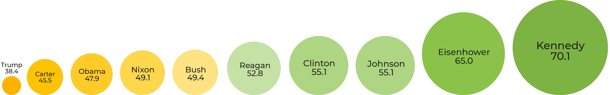
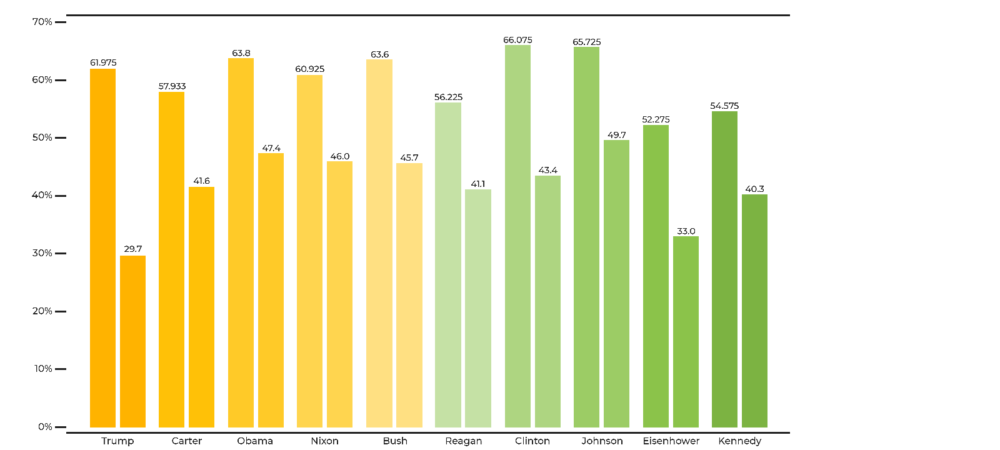

As a leader, remaining close to those you represent by remaining transparent with them, in addition to treating them with the same importance as similar figures with whom you work alongside, is crucial to success in such a position of power. As people being represented by an appointed figure, periodically reaffirming that your representative is accurately and effectively pushing your needs and concerns into the foreground of others' attention is crucial to satisfation. United States Presidents constantly communicate their agendas and topics of priority to the American people through speeches directed at the general public and at members of Congress, or other significant governmental officials. The manner in which a president publically speaks to citizens compared with how they publically speak to their government reveals their administration's perception of both groups, as well as how comfortable their administration is with the strength of their influence.
I analyzed party nomination acceptances, inaugural and farewell addresses, the State of the Union addresses, and annual economic report messages to Congress given by ten United States Presidents throughout their term(s). President Dwight D. Eisenhower was the first to deliver the State of the Union address as a televised speech, rather than a written message to Congress, for the entirety of his time in office, so he was the least recent president that I collected speeches from.
United States Presidential Approval Rating
Assessing the popularity of each president was accomplished by George Gallup, who introduced the United States presidential approval rating metric that resulted from his nationwide public polling at least thirteen times each year. Each poll responder was asked the following question:
"Do you approve or disapprove of the way [first and last name] is handling his job as President?"
Each president's approval rating is the average percentage of responders who approved of his behavior throughout his entire time in office. These approval ratings serve as a metric by which to rank the ten presidents I have pulled speeches from. The lower a president's approval rating, the more orange their corresponding circle is; the higher a president's approval rating, the more green their corresponding circle is.
Average Approval Percentages of Presidents

Flesch Reading Ease
The Flesch reading ease test classifies texts by how difficult they are to read on a 100.0-point scale. It considers the total number of words versus sentences, and the total number of syllables versus words in a text. The higher a text scores, the easier it is to read. An average American fifth grade student may easily comprehend a text with a score between 100.0 and 90.0; a text with a score between 30.0 and 0.0 is best interpreted by a university graduate. There exists a Flesch-Kincaid grade level test, which is similar in that it considers the same variables, but presents a United States grade level estimation (1.0 to 12.0). This is an easier scale to understand and interpret, but its range isn't as wide, so its results are not as precise as those from the Flesch reading ease test. Also, the Department of Defense and other governmental organizations use the Flesch reading ease test to categorize and quantify their documents, so I'm trusting their judgement.
Each speech that was gathered was grouped by president, and again by the speech category, so that each president had five subgroups of speeches. I calculated the reading ease of all speeches in every subgroup, and found the average reading ease for each president's subgroups. Then, each president's subgroup scores were averaged to obtain that president's overall reading ease. These final scores are depicted below.
Overall Flesch Reading Ease Scores
Not very interesting. Each president attempts to remain "eye-level," so to speak, with the American population in their speeches directed towards them, but when speaking to members of Congress or other governmental officials, they turn to their education, experience, and intelligence to convey their messages and visions in detail.
When the target audience of each speech category is considered, however, the results are more informative. Even more information is surfaced when the reading ease of speeches only from each president's first two years in office are analyzed. During each president's first two years in office, as their administration finds their footing, their comfort level with their power and the manner in which they exercise it are most evident than during any other time during their term(s). The way that they treat or consider the general public versus members of Congress is evident in the differences in their speeches to both groups.
Difference in Readability of Public versus Government Speeches during First Two Years

Kennedy, the president with the highest overall approval rating out of all ten presidents, has the lowest difference between the reading ease of his speeches directed towards the general public and those directed towards members of Congress and other governmental officials; Trump, the president with the lowest overall approval rating out of all ten presidents, has the highest difference between the reading ease of his speeches.
Writing consistently suggests that one's thoughts and arguments are concrete, and that the writers or contributors have mutually agreed on directions that they would like to take each topic in. Writing similarly to multiple audiences also suggests that the writer does not make distinctions between the audiences. From the point of view of a commoner being represented by an authority figure, the fact that they are talked to and addressed with the same tones and composition as more powerful figures implies that they are of the same level of importance, and respected to the same degree. The staggering difference in the way that Trump speaks to Congress members (while his political party has the majority in the House of Representatives and the Senate) and the American population subconsciously instills suspicion and wariness in his citizens, and erodes away their trust in him to lead.
Reflective or Prospective
Details more closely revealing Kennedy and Trump's perspectives from which they viewed and handled their responsibility as President are present in their Administration's most dense speeches: annual economic reports to Congress. As both Administrations reflect on the previous year and the nation's economic progress, attitudes concerning how issues are dealt with are apparent in the prospective and reflective language used.
I gathered the sum of frequently-occurring phrases that suggested prospective outlooks or reflective outlooks throughout Kennedy's two economic report messages, and Trump's only economic report message so far.
Prospective Phrases in Economic Report Messages
Reflective Phrases in Economic Report Messages
Remember that Kennedy has much more material where these phrases have appeared. Trump's single report is fairly short, composed of nearly 160 sentences, while Kennedy speaks a combined 750 sentences.
The differing focuses of these two Administrations are clear, nonetheless: Trump foresees the future, explaining what he makes of the current situation and making promises for what he will do in time, and Kennedy reflects on the past, highlighting what has been done "to ________" before. Trump talks a great deal about himself and what his team is thinking about, which feels as though he is forcing listeners to recognize what he recognizes, and consider those things in the same way that he does. Kennedy makes prospective statements like this, as well, but not nearly to the degree that Trump does, especially considering that he has close to five times more writing in economic reports.